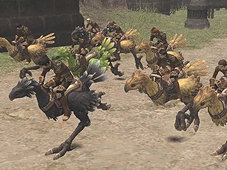
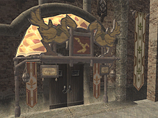
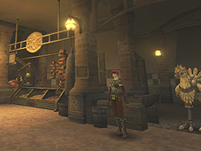
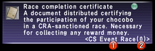
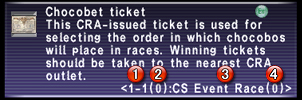

The Chocobo Circuit is the venue for “Adventurer Races,” which allow players to pit their chocobos against each other in action-packed competition. In addition, apart from breeders eager to get their birds on the track, the circuit can also be enjoyed by spectators wishing to make some fast gil. The introduction of chocobets allows any visitor to the circuit the opportunity to place a gil wager on the chocobos of his or her choice. Player vs. player racing and chocobetting are the two core features of the Chocobo Circuit, and make a visit to the racetrack an enjoyable day out for any resident of Vana’diel!
※Entry to the Chocobo Circuit requires registration and installation of the Treasures of Aht Urhgan expansion pack.
※Click the link below for details on chocobo raising.
Related Information>>
※Click the link below for details on chocobo racing.
Related Information>>
For the convenience of its patrons, the Chocobo Circuit provides the following services:

Chocobo Circuit Entry
The Chocobo Circuit can be entered from any of five entrances, each labeled “Gate: Chocobo Circuit.” These are located near the chocobo stables in San d’Oria, Bastok, and Windurst, as well as two recently constructed gates in Port Jeuno and Aht Urhgan Whitegate. At present, there is no admission fee and entry is open to all.
※Chocobo Circuit warps cannot be used as a means to travel from nation to nation. Exiting the racetrack will return the player to his or her point of entry.
※All bazaars on Chocobo Circuit premises will incur a 10% tax.
General Information
In addition to detailed explanations of all the racetrack facilities, the assistants at the General Information Center can provide players with a wealth of advice on Adventurer Races and chocobetting.
They are also more than happy to give updates on each racing team’s point tally and the current standings.
※Chocobo Circuit maps are available free of charge at the General Information counter.
Promenade
Here players can sign their birds up for entry in Adventurer Races, as well as visit item shops to purchase any of a plethora of race-related goods.
Promenade assistants are always on hand in groups of four and impossible to miss in their brightly colored uniforms and bright red berets. They are ready and willing to help players with the procedures necessary to register their birds as “racing chocobos,” signup for a race, or transfer racing teams, among other things.
Chocobet Center
The two primary functions of the chocobet center are to issue and cash out chocobet tickets.
The clerks, also appearing in fours and colored suits, are distinguishable by their green berets. The chocobet centers can be found near the grandstand entrances.
Grandstand
Possession of a “Chocobo Circuit grandstand pass” or a small admission fee of 50 gil will grant players entry to the grandstand.
Here patrons can enjoy a front-row view of all the action. They can even visit the paddock to get a closer look at the race participants, and keep an eye on the ever-changing toteboard at the nearby information counter.
Guides
Guides are stationed around the Chocobo Circuit to assist players in reaching any of the racetrack facilities. This service is provided at no cost.
The guides all wear red berets, and can be found at conveniently located throughout the premises.
Races held at the Chocobo Circuit will follow virtually the same system as “Official Races” and “Private Races” currently held in the three nations.
Adventurer Races do stand apart, however, in that players will be racing in direct competition with one another. In addition, and also unique to the Chocobo Circuit, triumphs on the track can net handsome profits and victory points!
Race Schedule
The Chocobo Circuit hosts four consecutive races.
At relevant racetrack facilities, there are four assistants to aid players, one for each of the four races.
The race for which an assistant is responsible is determined by the color of their uniform.
Victory Points
Players who place in the top three of any Adventurer Race will be awarded “Victory Points” for their achievement. There are two types of these points, both of which are awarded simultaneously. Players receive “Solo Victory Points,” while their team of affiliation receives “Team Victory Points.”
- Solo Victory Points
Amassing Solo Victory Points will permit a player to access more challenging races.
Races are organized into a hierarchy of “grades,” with a greater number of victory points required to unlock higher-grade races.
Four grades exist in all, ranging from C1 to C4. The lower the number the more difficult the race--and, consequently, the greater the stakes.
※Should a player not participate in a race for a period of four weeks (Earth time), his or her Solo Victory Points will begin to gradually diminish.
※Transferring racing teams will result in a loss of all Solo Victory Points.
- Team Victory Points
All racing teams obtain Team Victory Points from their members’ wins, which are then tallied once per week in the same manner as Conquest Points to determine standings.
Teams may be subject to the following benefits and restrictions based on their weekly rank:
・Perk #1: More goods and services available for chocobuck purchase.
・Perk #2: Higher-quality saddles available for Adventurer Races.
・Restriction: Less positions available in races compared to other teams.
※The standings of each racing team can be checked at General Information.
The signup procedure for Adventurer Races is detailed below.
Race Preparations
The below preparations must be completed before signing up for a race.
These procedures may be carried out either at the Chocobo Circuit promenade or the chocobo stables in any of the three nations.
1. Join a racing team (required)
2. Complete racing chocobo registration (required)
3. Ready race items (optional)
4. Give the jockey orders (optional)

Signing Up to Race
Completing the first steps listed above will enable a player to sign up for a race.
The signup procedure is detailed below.
1. Pay the racing fees
In order to enter a racing chocobo in an Adventurer Race, players are required to pay a racing fee. This fee will be requested upon signup.
2. Select a saddle and lane
Players are able to select the saddle and lane of their choice for races in which their chocobo participates.
There is a variety of saddles, each with its own benefits and effects. The types available to a player depend upon the current rank of his or her racing team.
"Saddles"
The saddles available are determined by a team’s place in the standings.
・Wooden saddles: Standard models that improve endurance.
・Metal saddles: Improve strength while hampering endurance.
・Cloth saddles: Improve performance through a chocobo’s discernment.
・Leather saddles: improve performance through a chocobo’s receptivity
※Without sufficient discernment and receptivity the benefits of cloth and leather saddles will not be felt.
The racetrack is comprised of eight lanes, numbered from 1 to 8. All lanes are identical in every respect, and none has any advantage over the other.
3. Race Completion Certificates
Upon successfully signing up to participate in a race, a player will be given a “race completion certificate.”
Without this certificate, players cannot obtain purses and their victories will not be recorded. Please take the utmost care not to lose or discard them.

1. Race grade and title
2. Race ID
※Race ID
An ID will be assigned to each race. No two race IDs will ever be the same.
4. Watching from the Grandstand
After signing up to race, players will also receive a “Chocobo Circuit grandstand pass,” at no charge.
This pass grants free admission to the grandstand, where the player can watch their bird fly by, so to speak.
※Following participation in any race, players will be prohibited from entering another race for a period of one week (Earth time).
※In the event that eight players do not sign up for any given race, the empty lanes will be filled by NPC chocobos.
※Under the following circumstances, signups cannot be processed:
・Another player has already been assigned to the lane a player has chosen.
・Player’s team has reached its limit of positions in the race due to rank.
・Player has not fulfilled the necessary conditions to race (racing fee, victory points).
Collecting a Purse
Placing in the top three in a race entitles the player to a purse consisting of chocobucks, victory points, and gil.
Purses can be collected by trading a winning race completion certificate to the proper assistant in the promenade’s signup area.
※Should one week (Earth time) pass after a race, a player forfeits any purse to which he or she may have been entitled.
Simply put, chocobetting is a form of entertainment that allows players to place a gil wager on two chocobos of their choice in any Adventurer Race.
How Chocobets Work
Ambitious players wishing to place a bet need only purchase a chocobet ticket from any chocobet center at the fixed rate of 100 gil per quill.
A single ticket may contain a maximum of 999 quills.
All bets are quinella bets, meaning that the player chooses the birds he or she believes will finish in the top two. The order in which the two chocobos finish is irrelevant.
※For example, a bet on birds #2 and #5 is a winning bet if #2 finishes first and #5 finishes second, or if #5 finishes first and #2 finishes second.

1.Chocobo pairing
2.Number of quills
3.Race grade and title
4.Race ID
The Odds
Odds are a numerical value representing the amount of gil a player will receive per quill on a winning bet, and may be different for any chocobo pairing.
The odds for a chocobo pair will go down as the number of bets on them increases. On the other hand, a coupling with fewer bets riding on it will have comparatively higher odds.
The actual value of a winning bet is calculated based on the number of quills on the ticket and the odds for that chocobo pairing.
In the unlucky event that a player’s picks do not win, the chocobet ticket will be worth 0 gil, regardless of any odds.
※Odds are based on the overall placement of bets, and are prone to change (in real time) up until the start of a race. Toteboards are available for viewing at any chocobet center, as well as the information counters found in the grandstand.
Cashing Out
After a race, lucky players can collect their winnings by trading their chocobet ticket to any chocobet center clerk.
※Should a winning chocobet ticket be lost, or one week (Earth time) pass after a race, a player forfeits any winnings to which he or she may have been entitled.
※If a player is unsure of the outcome of a race, he or she may always check to see if their ticket is a winner by trading it to a chocobet center clerk.
"No Contest" Races
In the event of a missed race(s) due to server outage, the race(s) will be declared a “No Contest.” All racing fees and placed chocobets will be refunded in full.
- Racing Fee Refunds
Players can have their racing fees refunded simply by trading their race completion certificate to the proper assistant.
Refunds will be conducted by assistants on the promenade.
- Chocobet Refunds
Regardless of the chocobos selected or the odds, chocobet tickets will be refunded at a flat rate of 100 gil per quill.
Refunds can be received at any chocobet center.
Warning
Players should always bear in mind that although chocobetting presents an opportunity to strike it rich quick, it also carries the risk of wiping out your entire bankroll! Under no circumstances will the loss of gil as a result of gambling be reimbursed. For this reason we ask that players enjoy the new chocobet system only after careful consideration, and please act responsibly.